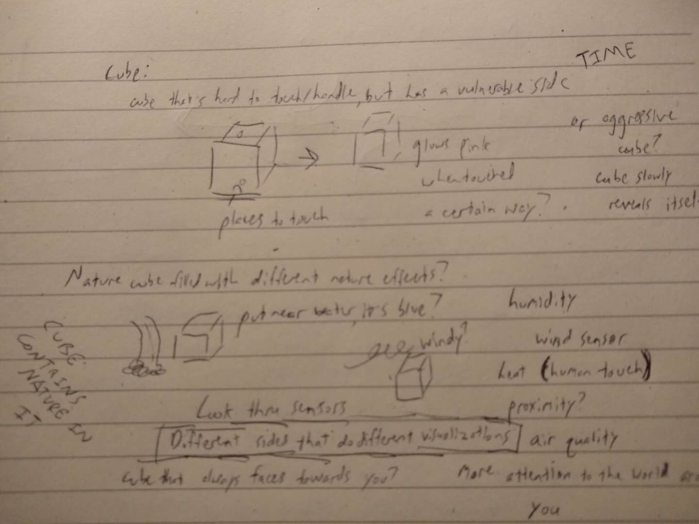

"Weathe Journals" is a proposal for an AI-powered story generation machine that takes weather data as its input and produces short (~500 word) stories based on input from participants.
"Weather Journals" works by continually fine-tuning OpenAI's GPT2 text generation model. The program will scan the day's weather data and update the model daily based on what it finds. Participants will be able to provide a short prefix that dictates how they want their story to start, and the algorithm will generate the rest of the story.
Something to address is where I source the text from. There are basically 3 options:
1. I source the text according to text that I associate with different weather metrics, like illuminance or rain or wind.
2. I write the text myself and update it based on the weather I experience each day.
3. I invite people to write text that reflects how the weather makes them feel that day, and train the machine on that (this introduces the problem of content moderation, I don't want people swearing into my neural network).
I was inspired by a description of Ann Hamilton's Corpus at the Mass Moca, and I thought it would be interesting if, since the stories are written by the weather, they were dropped down from the sky. I imagine that the participant will input how they'd like their story to start in a little input module, and the the story will generate and drop down on them. They can take it or leave it afterwards. See my (highly detailed) sketch below.
 Comments? Questions? Concerns? Email me here!